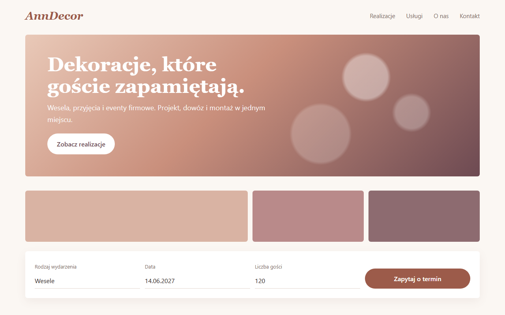
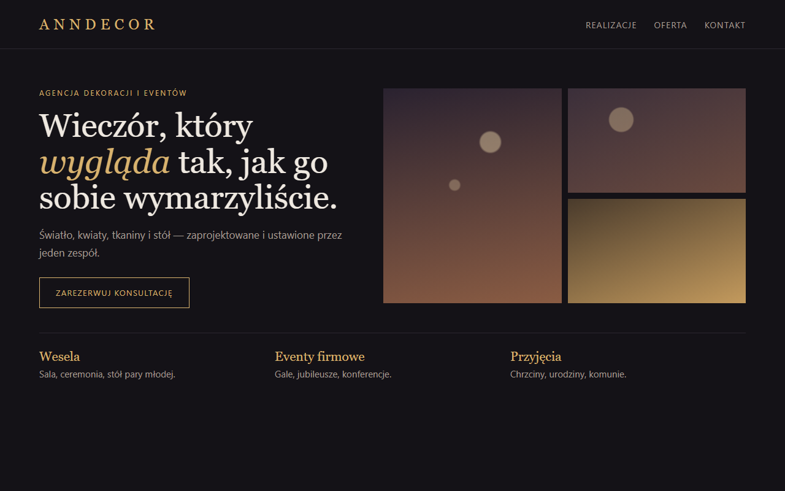
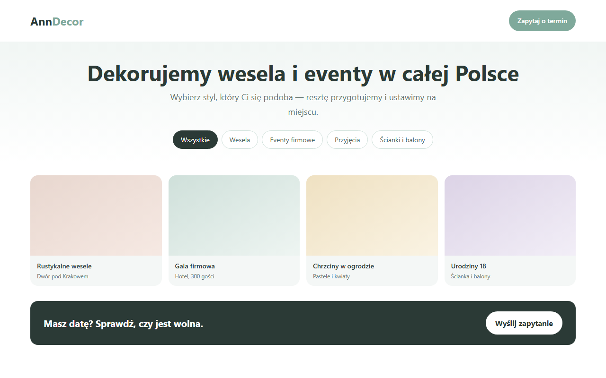

AnnDecor — trzy kierunki strony
Szkice wyglądu górnej części strony. W miejscu kolorowych pól pojawią się Państwa zdjęcia realizacji.



Szkice wyglądu górnej części strony. W miejscu kolorowych pól pojawią się Państwa zdjęcia realizacji.


